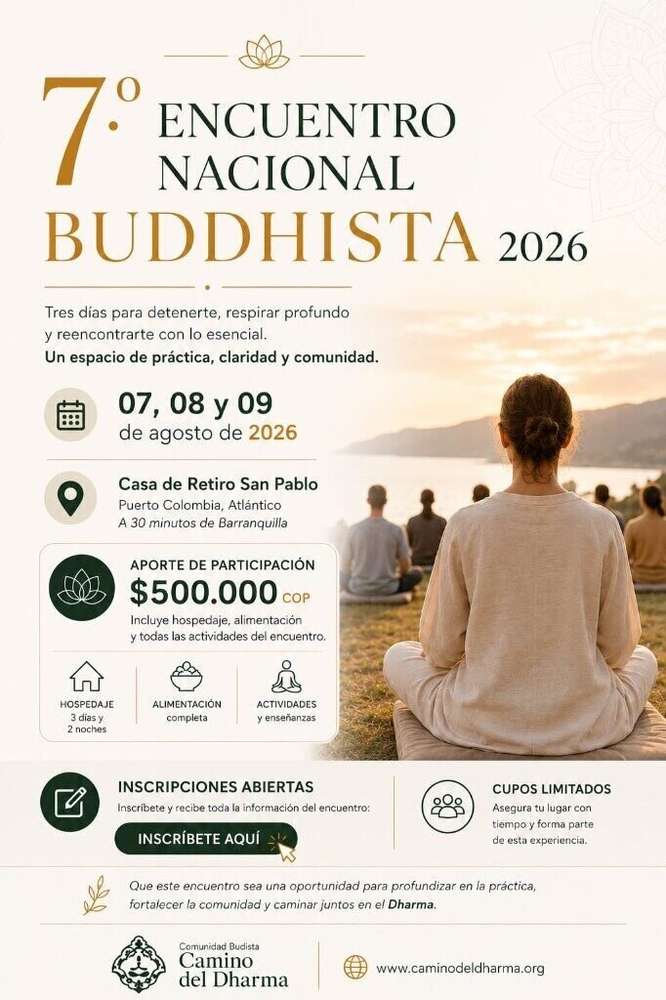

Retiro
7.º Encuentro Nacional Buddhista – 2026

Tres días para detenerte, respirar profundo y reencontrarte con lo esencial. Un regalo para vivir con claridad, práctica y comunidad.
Ya tenemos abiertas las preinscripciones. Cupos limitados. Realiza tu preinscripción y recibe primero toda la información.
Preinscribirme (abre en nueva pestaña)
Comparto esta invitación de Camino del Dharma: *7.º Encuentro Nacional Buddhista 2026* Ya están abiertas las inscripciones. Tres días para detenernos, respirar profundo y reencontrarnos con lo esencial. Un espacio de práctica, claridad y comunidad. 📅 07, 08 y 09 de agosto de 2026 📍 Casa de Retiro San Pablo, Puerto Colombia A 30 minutos de Barranquilla. 💰 Aporte: $500.000 COP Incluye: • Hospedaje durante los tres días • Alimentación completa • Todas las actividades, enseñanzas y prácticas Cupos limitados. Información e inscripciones: {{SHARE_URL}} Un espacio para detenernos, aprender y regresar a la vida con mayor claridad y compasión. Encuentro · Camino del Dharma 7.º Encuentro Nacional Buddhista – 2026 📅 07–09 ago 2026 · 📍 Puerto Colombia Encuentro · Camino del Dharma 7.º Encuentro Nacional Buddhista – 2026 Tres días para detenernos, respirar profundo y reencontrarnos con lo esencial. 📅 07, 08 y 09 de agosto de 2026 📍 Casa de Retiro San Pablo, Puerto Colombia